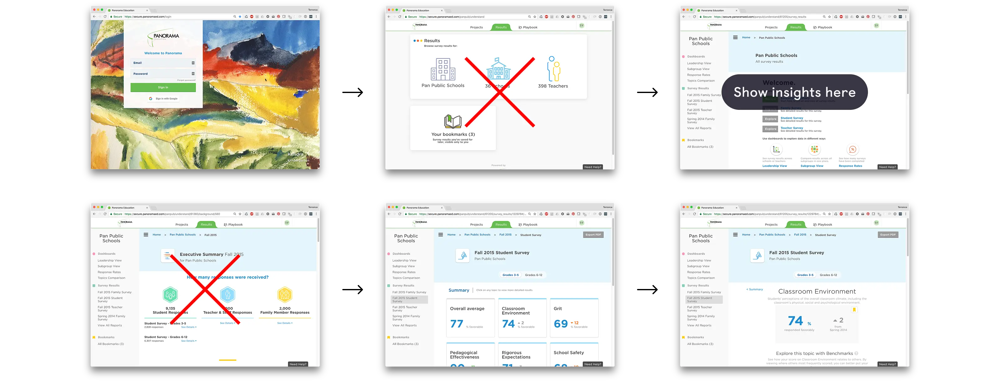
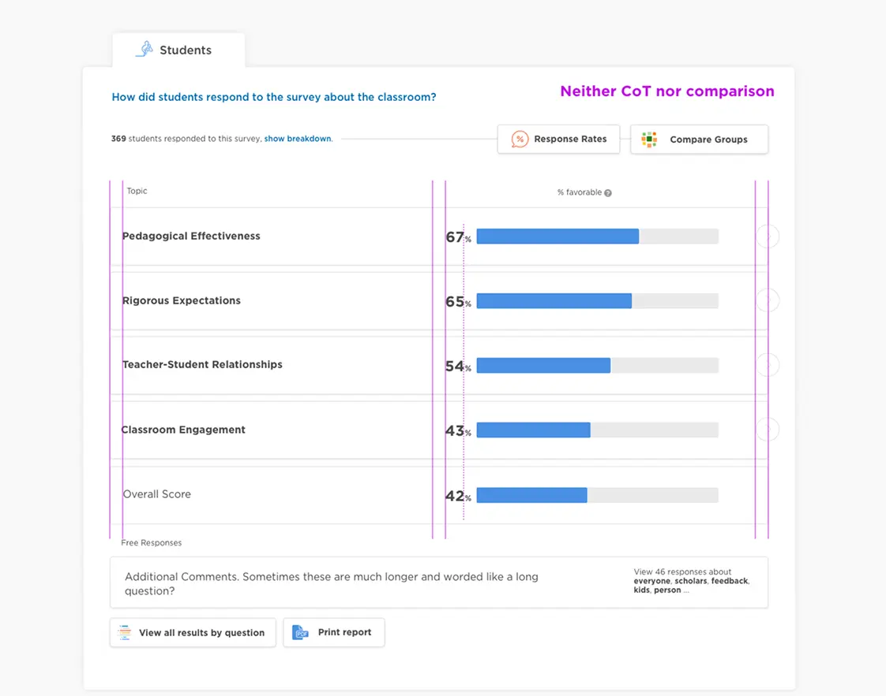

Information architecture · Data insights · B2B · EdTech
From Clicks to Clarity
Enabling educators to access their survey reports 2x as fast and interpret them more easily.
My role
I led the design from concept to execution
Lead Product Designer
Tech Lead
🚀 Built a working prototype to validate feasibility across diverse customer configurations
2 Engineers
Engineering Team
The feature successfully launched in August 2022.
The Problem
Design debt led to less impact
Many of our users (teachers) would only visit our product 2 times a year. This segment of users was our largest and most likely to drop off or not understand their survey results. Furthermore, features we had built over the last year had created more barriers to getting to the survey results.
We used FullStory to observe users navigating the current experience.
We analyzed support tickets and user feedback holistically and addressed a massive amount of them with a systems thinking level change.
Mapping the existing user flow revealed unnecessary complexity and nested navigation.
How might we remove barriers and communicate results more clearly?
The Redesign
Introducing a Better Way
Just show me my results
We put insights earlier in the user flow and addressed issues that caused excessively long reports.
We identified and removed unnecessary pages that created barriers to accessing survey results.
Actionable visualizations
Displaying their scores alongside trends and appropriate benchmarks provided the right context for the data.
Survey results with actionable data visualizations and benchmarks.
A seamless path to insights
See how a user can now log in and quickly get to their data—and the data is easy to understand.
Improved experience via a simplified Information Architecture
By deeply understanding the product codebase and the customer problem I was able to find a solution that was feasible for engineering to build after the tech lead, Geoffrey, proved it out with a coded prototype.
Before
There were many nested concepts resulting in nested pages that users couldn't easily find.
After
We were able to merge project types and respondents on a single page. Our stretch goal was to combine the template surveys but it would have required substantial investment we didn't have the resourcing to do.
The Impact
decrease in drop offs
We observed a significant increase in the number of users accessing their report results, achieving this 2x as quickly. Additionally, we saw a rise in NPS ratings.
The complete redesigned experience showing all key screens.
Want to see more?
Get in touch with me to see my in-depth case studies.